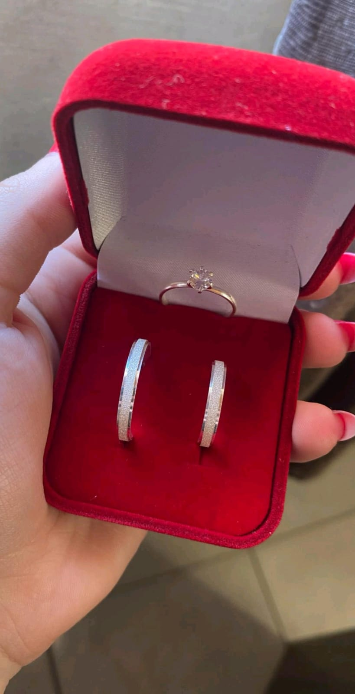
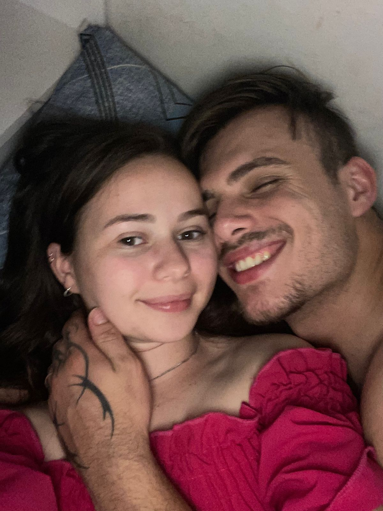

Eu confesso: achei que seríamos só mais um casal e que o tempo cuidaria de apagar o que sentíamos. Pensei que o destino nos levaria por caminhos opostos assim que a novidade passasse. Que erro maravilhoso o meu! Nunca fiquei tão feliz por estar errado. O nosso 'fogo momentâneo' revelou-se um sol que ilumina meus dias, e hoje sei que o nosso lugar é exatamente aqui: um ao lado do outro.
Viver nossa harmonia diária é como habitar uma espiral de amor que não para de crescer. Às vezes, me pergunto se realmente mereço a sorte de receber tanto carinho e uma entrega tão pura e amável quanto a sua. Obrigado por me fazer sentir a pessoa mais afortunada do mundo apenas por ter o seu amor. E, para ser sincero, vou passar minha vida toda me questionando se mereço mesmo esse amor. Mas prometo fazer de tudo para ser merecedor de tamanha felicidade.
Leticia, há sete anos nossos caminhos se cruzaram e, desde então, o mundo mudou muitas vezes. Em meio a tantas turbulências e incertezas, descobri que minha única constante é você. Obrigado por este último 1 ano e 6 meses da mais pura felicidade e harmonia; eles têm sido o porto seguro que eu sempre busquei. Você é, e sempre será, o meu maior motivo para ser alguém melhor a cada dia. Minha eterna parceira e minha futura noiva.
